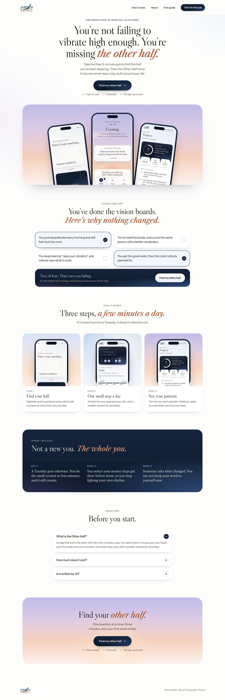
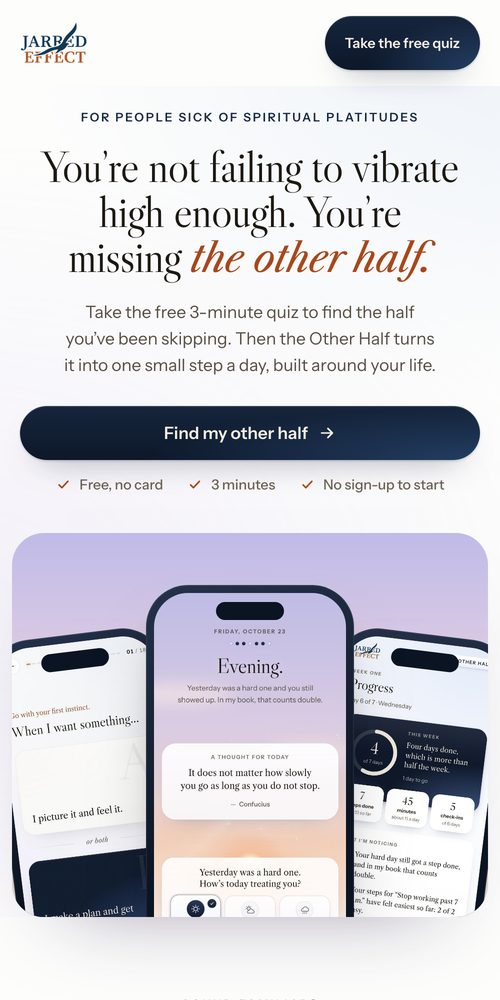
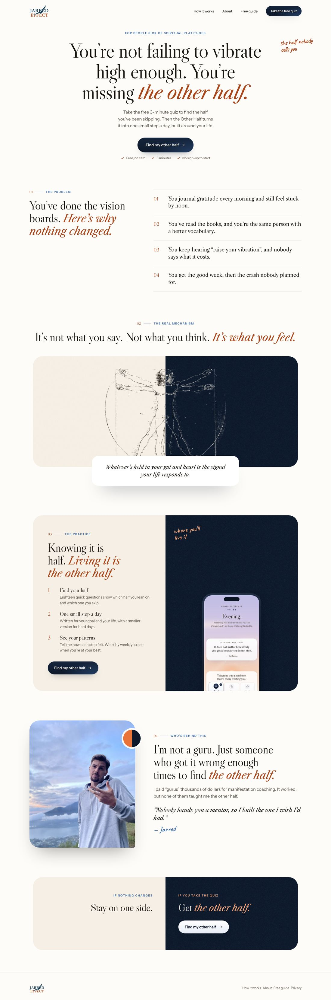
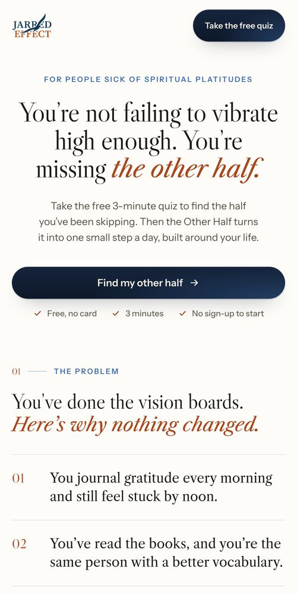
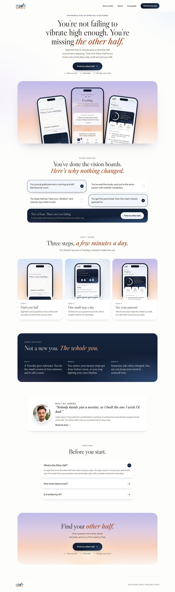

<title>Homepage Style</title>
<meta name="claude:viewport-fit-sides" content="cover">
<link rel="preconnect" href="https://fonts.googleapis.com"><link rel="preconnect" href="https://fonts.gstatic.com" crossorigin>
<link rel="stylesheet" href="https://fonts.googleapis.com/css2?family=Instrument+Sans:wght@400;500;600&family=Libre+Caslon+Display&family=Libre+Caslon+Text:ital@0;1&display=swap">
<style>
/* Picking one design style for the homepage: three whole pages, each in a single style, with where the personal brand lives */
:root{--bg:#f4f5f9;--card:#ffffff;--fg:#1c1812;--dim:#574f43;--faint:#6b6254;--line:rgba(28,24,18,.1);--accent:#1a2a44;--rust:#a8471c;--tint:#eef2fa;--pick:#1a2a44;--on-pick:#f4eee4;
  --serif:"Libre Caslon Display","Libre Caslon Text",Georgia,serif;--serif-t:"Libre Caslon Text",Georgia,serif;--sans:"Instrument Sans","Helvetica Neue",Arial,sans-serif}
@media (prefers-color-scheme:dark){:root:not([data-theme="light"]){--bg:#0d141f;--card:#151e2c;--fg:#efe7da;--dim:#c4bcaf;--faint:#a39a8c;--line:rgba(239,231,218,.12);--accent:#b9c9ea;--rust:#f3a378;--tint:rgba(185,201,234,.08);--pick:#b9c9ea;--on-pick:#0d141f;color-scheme:dark}}
:root[data-theme="dark"]{--bg:#0d141f;--card:#151e2c;--fg:#efe7da;--dim:#c4bcaf;--faint:#a39a8c;--line:rgba(239,231,218,.12);--accent:#b9c9ea;--rust:#f3a378;--tint:rgba(185,201,234,.08);--pick:#b9c9ea;--on-pick:#0d141f;color-scheme:dark}
*{box-sizing:border-box}
body{margin:0;background:var(--bg);color:var(--fg);font-family:var(--sans);font-size:16px;line-height:1.55;-webkit-font-smoothing:antialiased}
.wrap{max-width:76rem;margin:0 auto;padding-block:3rem 4rem;padding-left:max(16px,env(safe-area-inset-left,0px));padding-right:max(16px,env(safe-area-inset-right,0px))}
.kick{margin:0;font-size:.75rem;font-weight:600;letter-spacing:.16em;text-transform:uppercase;color:var(--accent)}
h1,h2{font-family:var(--serif);font-weight:400;margin:0;text-wrap:balance;letter-spacing:-.01em}
h1{margin-top:.75rem;font-size:clamp(2rem,4.5vw,3.25rem);line-height:1.05}
.lead{max-width:46rem;margin:1rem 0 0;font-size:1.125rem;color:var(--dim);text-wrap:pretty}
.two{display:grid;grid-template-columns:repeat(auto-fit,minmax(min(20rem,100%),1fr));gap:.75rem;margin:2rem 0 0}
.two div{padding:1.125rem 1.25rem;border-radius:1rem;background:var(--card);box-shadow:inset 0 0 0 1px var(--line)}
.two b{display:block;margin-bottom:.25rem;font-weight:600}
.two p{margin:0;font-size:.9375rem;color:var(--dim)}
.opt{margin-top:3.5rem;padding:1.75rem;border-radius:1.75rem;background:var(--card);box-shadow:inset 0 0 0 1px var(--line),0 1.5rem 3rem -2.5rem rgba(6,12,24,.4)}
.opt.is-rec{box-shadow:inset 0 0 0 2px var(--pick),0 1.5rem 3rem -2.5rem rgba(6,12,24,.4)}
.oh{display:flex;flex-wrap:wrap;align-items:baseline;gap:.5rem 1rem}
.letter{font-family:var(--serif);font-size:2.25rem;line-height:1;color:var(--rust)}
.opt h2{font-size:clamp(1.5rem,3vw,2rem);line-height:1.15}
.rec{display:inline-flex;align-items:center;height:1.75rem;padding:0 .75rem;border-radius:99px;background:var(--pick);color:var(--on-pick);font-size:.75rem;font-weight:600;letter-spacing:.06em;text-transform:uppercase}
.idea{margin:.625rem 0 0;font-family:var(--serif-t);font-style:italic;font-size:1.1875rem;text-wrap:pretty}
.shots{display:grid;grid-template-columns:minmax(0,1fr) minmax(0,15rem);gap:1.25rem;align-items:start;margin-top:1.5rem}
@media (max-width:760px){.shots{grid-template-columns:minmax(0,1fr)}.shots figure+figure{max-width:15rem;margin:0 auto}}
figure{margin:0}
.scroll{max-height:40rem;overflow-y:auto;overscroll-behavior:contain;border-radius:.875rem;box-shadow:0 0 0 1px var(--line),0 1.25rem 2.5rem -1.75rem rgba(6,12,24,.5);background:#fdfdfc}
.scroll img{display:block;width:100%;height:auto}
.phone{display:block;width:100%;height:auto;border-radius:1.5rem;box-shadow:0 0 0 1px var(--line),0 1.25rem 2.5rem -1.75rem rgba(6,12,24,.5)}
figcaption{margin-top:.5rem;font-size:.75rem;font-weight:600;letter-spacing:.12em;text-transform:uppercase;color:var(--faint)}
.why{display:grid;grid-template-columns:repeat(auto-fit,minmax(min(16rem,100%),1fr));gap:1rem 1.5rem;margin:1.5rem 0 0;padding:1.25rem 0 0;border-top:1px solid var(--line)}
.why h3{margin:0 0 .25rem;font-size:.75rem;font-weight:600;letter-spacing:.12em;text-transform:uppercase;color:var(--faint)}
.why p{margin:0;font-size:.9375rem;color:var(--dim);text-wrap:pretty}
.plan{margin-top:3.5rem;padding:1.75rem;border-radius:1.75rem;background:var(--tint)}
.plan h2{font-size:1.625rem}
.plan table{width:100%;margin-top:1rem;border-collapse:collapse;font-size:.9375rem}
.plan th,.plan td{padding:.75rem .5rem;border-bottom:1px solid var(--line);text-align:left;vertical-align:top}
.plan th{font-weight:600}
.plan td{color:var(--dim)}
.tbl{overflow-x:auto}
.ask{margin:1.5rem 0 0;font-weight:600}
</style>
<main class="wrap">
  <p class="kick">The Other Half · Homepage</p>
  <h1>One style for the homepage</h1>
  <p class="lead">Right now the homepage runs two design languages at once: half is editorial personal branding (handwritten notes, the Vitruvian figure, numbered magazine labels, grain), half is the app (phones, skies, app cards). Each of these three is one style from top to bottom, with the same words, so you’re choosing the style and where your personal brand lives.</p>
  <div class="two">
    <div><b>Scroll inside each page</b><p>Each one is a full homepage. Scroll inside the frame to see the whole page.</p></div>
    <div><b>Your personal brand doesn’t disappear</b><p>Whatever the homepage becomes, About, the free guide and Compare carry your story and the method in full.</p></div>
  </div>

  <section class="opt">
    <div class="oh"><span class="letter">A</span><h2>The app, start to finish</h2></div>
    <p class="idea">Pure product. Every section speaks the app’s language: its skies, white cards, navy buttons and real screens.</p>
    <div class="shots">
      <figure><div class="scroll"></div><figcaption>Full page · scroll inside</figcaption></figure>
      <figure><figcaption>Phone</figcaption></figure>
    </div>
    <div class="why">
      <div><h3>Why it converts</h3><p>The page looks exactly like what they’re about to use, so there’s no gap between the promise and the product. Fewer ideas to process, one action.</p></div>
      <div><h3>How it feels</h3><p>Calm, modern, premium. Like a top app’s product page.</p></div>
      <div><h3>Where you live</h3><p>Nowhere on the homepage. Your story and the method sit on About, the guide and Compare.</p></div>
    </div>
  </section>

  <section class="opt">
    <div class="oh"><span class="letter">B</span><h2>Jarred’s method, in print</h2></div>
    <p class="idea">Pure editorial personal brand. The app appears as a feature inside your story, the way a magazine shows a product.</p>
    <div class="shots">
      <figure><div class="scroll"></div><figcaption>Full page · scroll inside</figcaption></figure>
      <figure><figcaption>Phone</figcaption></figure>
    </div>
    <div class="why">
      <div><h3>Why it converts</h3><p>Trust in you does the selling, which suits warm traffic: people who already know you or came from your content.</p></div>
      <div><h3>How it feels</h3><p>Personal, distinctive, a little literary. Closest to your current live site.</p></div>
      <div><h3>The trade-off</h3><p>The app is one section in your story, so visitors take longer to see what they’re signing up for. The site and the app also look like two different brands.</p></div>
    </div>
  </section>

  <section class="opt is-rec">
    <div class="oh"><span class="letter">C</span><h2>The app, with your voice in it</h2><span class="rec">My pick</span></div>
    <p class="idea">Option A’s single product style, plus one “Built by Jarred” card in that same style, so a real person stands behind the app without a second design language.</p>
    <div class="shots">
      <figure><div class="scroll"></div><figcaption>Full page · scroll inside</figcaption></figure>
      <figure><figcaption>Phone</figcaption></figure>
    </div>
    <div class="why">
      <div><h3>Why it converts</h3><p>Everything A does, plus trust. A face and one honest line near the end answer “who’s behind this?” just before people decide.</p></div>
      <div><h3>How it feels</h3><p>One consistent product look, with warmth. The app, the site and the emails finally match.</p></div>
      <div><h3>Where you live</h3><p>One card here, with “Read my story” leading to About, where your full story, the method and your photos get the space they deserve.</p></div>
    </div>
  </section>

  <section class="plan">
    <h2>Where your personal brand lives, page by page</h2>
    <div class="tbl"><table>
      <tr><th>Page</th><th>With A or C</th><th>With B</th></tr>
      <tr><th>Homepage</th><td>The app, in the app’s style (C adds the “Built by Jarred” card)</td><td>Your story, with the app as one section</td></tr>
      <tr><th>About</th><td>Your full story, the method, your photos and the gurus story: the home of your personal brand, in the same colors and type</td><td>Your full story, as now</td></tr>
      <tr><th>Free guide</th><td>The white paper, your note to the reader</td><td>The guide, as now</td></tr>
      <tr><th>Compare</th><td>The method compared, your take on each</td><td>As now</td></tr>
    </table></div>
    <p class="ask">Tell me A, B or C (or a mix), or leave a comment on any part of a page.</p>
  </section>
</main>
